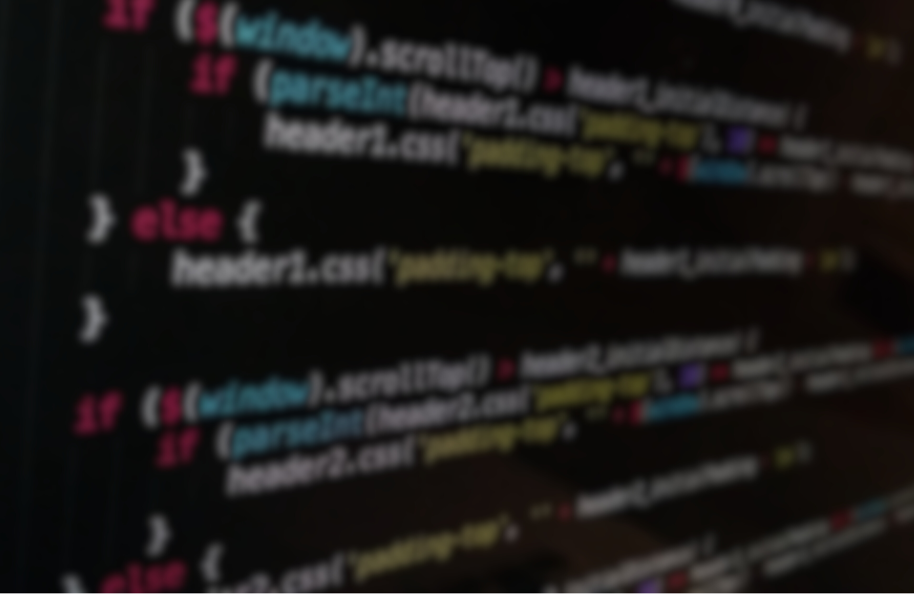

-
¿Qué tipo de trabajos puedo conseguir con un título en ciencias computacionales?
Hay una amplia gama de trabajos que puedes conseguir con un título en ciencias computacionales, desde desarrollador de software y analista de datos, hasta ingeniero de software y científico de datos. Las posibilidades son prácticamente infinitas y dependen de tus intereses y habilidades. -
¿Qué habilidades son necesarias para estudiar ciencias computacionales?
Las habilidades necesarias para estudiar ciencias computacionales incluyen un buen manejo de las matemáticas, la lógica, la capacidad de análisis, la resolución de problemas, la creatividad y la capacidad de trabajo en equipo.
-

¿Es necesario tener conocimientos previos en programación para estudiar ciencias computacionales?
No necesariamente. Si bien tener conocimientos previos en programación puede ayudar, muchas universidades ofrecen cursos introductorios de programación para estudiantes principiantes en el área de ciencias computacionales.
-
¿Qué lenguajes de programación son los más importantes para aprender?
Los lenguajes de programación más importantes para aprender dependen de tus intereses y del tipo de trabajo que desees conseguir. Algunos de los lenguajes de programación más populares incluyen Java, Python, C++, Ruby y JavaScript.
-

¿Cómo puedo estar seguro de que esta carrera es para mí?
Puedes estar seguro de que esta carrera es para ti si te gustan las matemáticas, la lógica, la resolución de problemas, la tecnología y la creatividad. Además, puedes investigar más sobre la carrera, hablar con profesionales y estudiantes en el área, y considerar tomar algunos cursos introductorios antes de tomar una decisión definitiva.